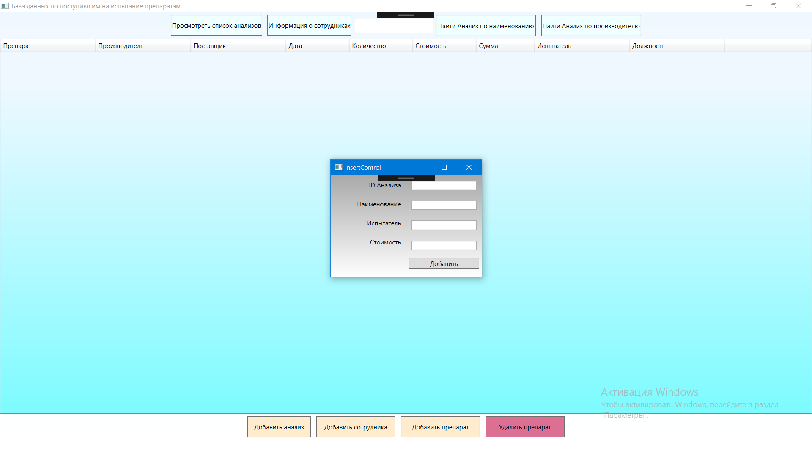
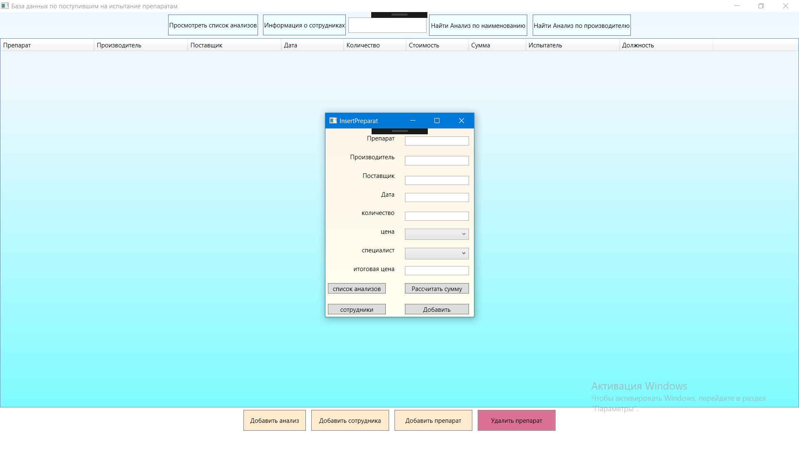
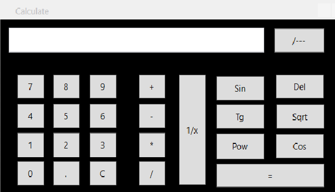
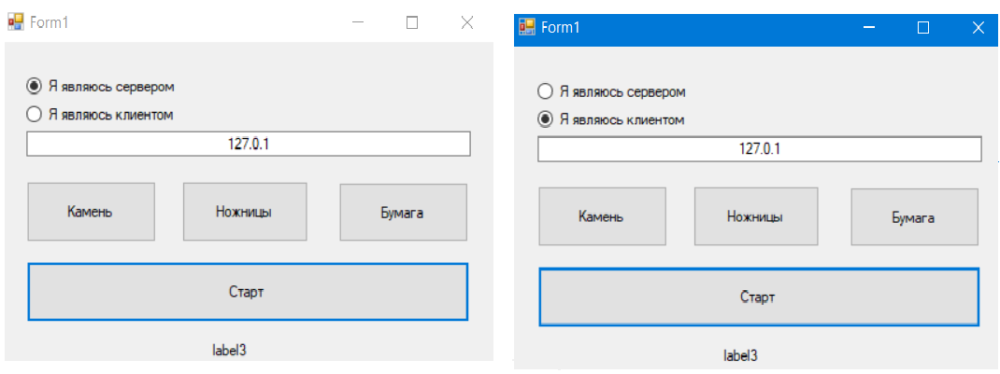
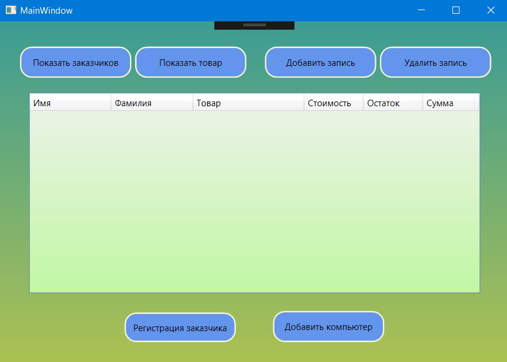
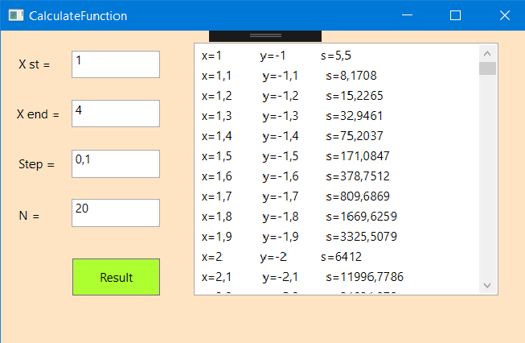

1/6

This program makes it easier for employees of the pharmaceutical laboratory to obtain drugs for analysis. The program stores information about specialists, the cost of analysis. The employee enters the medicine, chooses a specialist who will conduct the analysis and the program does the calculation of the cost. Also there is a function of finding a drug by name or manufacturer.
2/6

This is the screen of the input field of medicines for control in the laboratory.
3/6

It is a calculator with a simple set of functions: plus, minus, multiplication, division, sine, cosine, tangent, square, degree.
4/6

This is a small game of "stone-scissors-papers" the basic idea is the dispute who will win. One player chooses himself as a "server", the second as a "client." Then select "stone", "scissors", "paper". Pressed start. The winner is determined and each player is given a message
5/6

This program can be used in a computer store. here is a function of the input product, customer, delete records, and display all the records on the screen.
6/6

This program allows to calculate the function according to the entered initial value, the final value, the step and the quantity of iterations